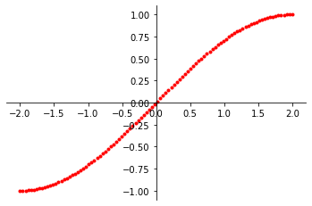
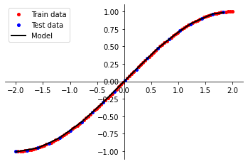

Function Approximation Using Neural Nets
During my last semester of graduate school I took a class that was focused on deep and reinforcement learning, and upon graduating I wanted to review some of my homework assignments. For one of the assignments we needed to create a model which would approximate the function f(x) = sin((pi / 4) * x), so in this post I want to walk through my process in answering this question. First we will begin with data generation.
import numpy as np
from matplotlib import pyplot as plt
import tensorflow as tf
from tensorflow import keras
from tensorflow.kerras import layers
np.random.seed(42)
def sin_func(x):
return np.sin((np.pi / 4) * x)
num_datapoints = 100
x = np.linspace(-2.0, 2.0, num = num_datapoints)
y = sin_func(x)
mask = (np.arange(len(x)) % 5) > 0
x_train = x[mask]
x_test = x[~mask]
y_train = y[mask]
y_test = y[~mask]

Here we can graph our data
points to better understand which section of the sine wave we want our model to approximate. After generating
the points, we then create a mask, which will be used to seperate the generated points into the training
and test datasets. Typically we want to use 20% of the overall data points in our test set, and use the
remaining 80% to train out model. After creating the training and test sets, we can start the construction
of the model. When working on this assignment I used Tensorflow to create the neural network.
model = keras.Sequential(
[
keras.Input(shape = (1, )),
layers.Dense(units = 16, activation = 'relu'),
layers.Dense(units = 1)
]
)
opta = keras.optimizers.Adam(lr = 1e-2)
loss = 'mse'
model.compile(
optimizer = opta,
loss = loss,
metrics = [loss]
)
history = model.fit(
x_train, y_train,
verbose = 0, epochs = 5000
)
y_preds = model.predict(x_test)
This model consists of a single layer using the ReLU activation function with 16 units. ReLU is the Rectified Linear Unit and is defined as ReLU = max(0, x), meaning if the input x is less than 0, it will set the input to 0, otherwise it will use the given input. I picked 16 units for two main reasons: first it is within the tradition of Computer Science to use values that are factors of 2. Second, this number was chosen through trial and error in trying to find what number of units would allow this model to converge with the proper approximation value. The final layer has a single unit because it serves as the output for the model, meaning we are expecting a single outcome from our function. If this were a classification model then this final layer would have the same number of units as the potential classes we are trying to distingish between.
 After creating the model, I needed to compile it before I can start training. I used the Adam optimizer which is an extension of the stochastic gradient descent optimization method that now updates network weights individually. The loss function used was the mean squared error (mse) function, which is great when we are trying to predict a real value quantity. Once our model is compiled, we can begin to fit the data to the model to train it to approximate our target function. The number of epochs I trained the model on was something I initially played around with to determine how much training the model needed in order to accurately approximate values. After the model was trained, we are able to call predict on our test values in order to see the accuracy of our model. The figure to the right shows the results when we plot our model predictions against the expected values.